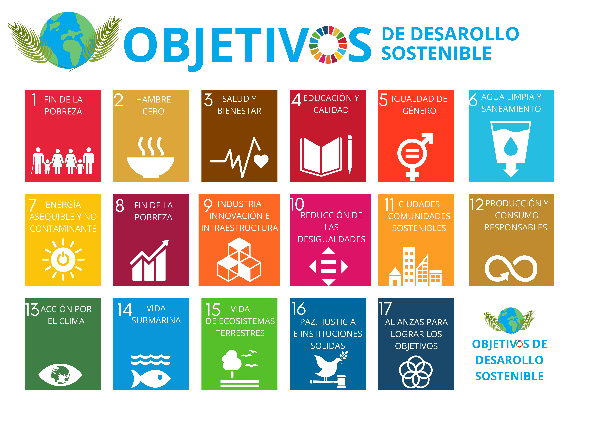
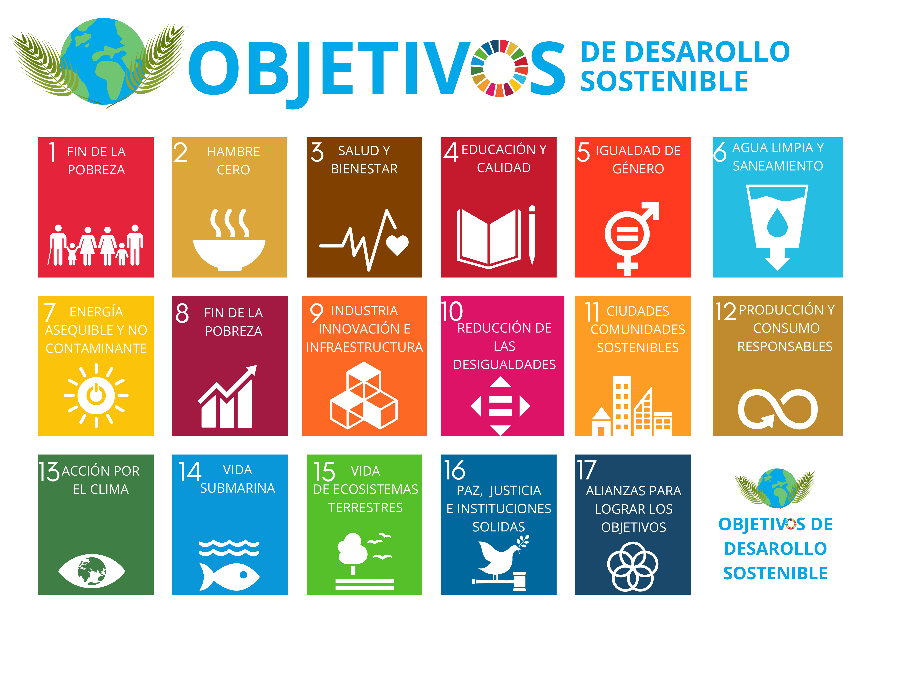
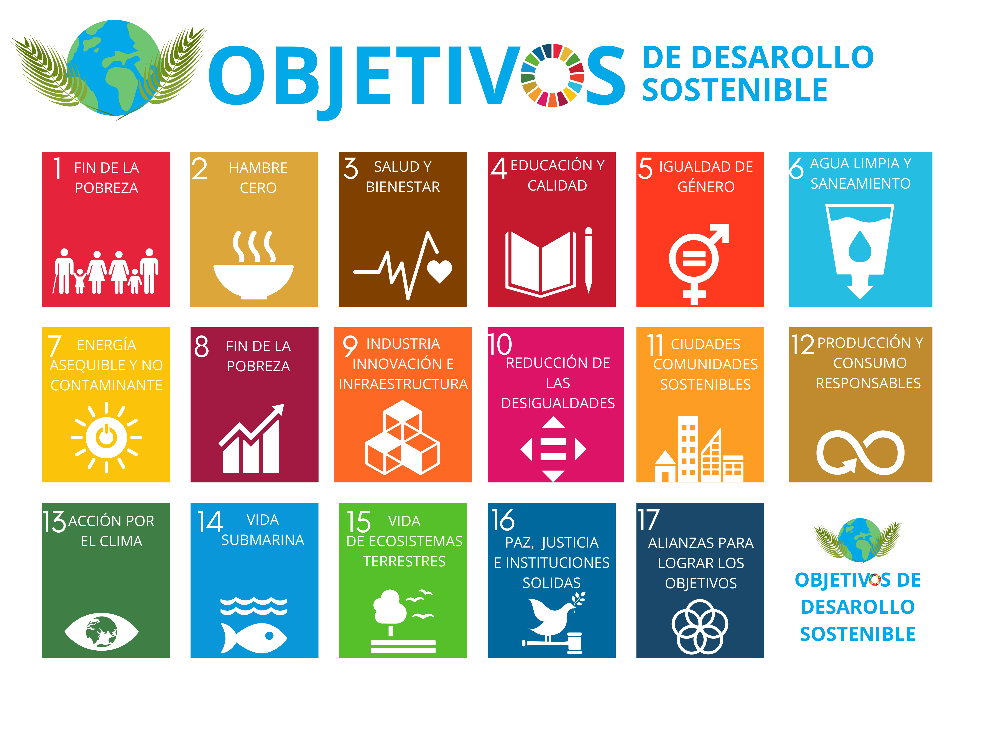

Los Objetivos de Desarrollo Sostenible (ODS) tratan de conseguir un futuro mejor y más sostenible para todos. También conocido como la Agenda 2030, LA ONU y otras empresas apoyan estos objetivos. Nosotros también podemos apoyarlos.

PREGUNTAS |
| ¿Cuando vas a un espacio natural a pasar el día, ¿qué haces con la basura? |
| ¿Qué haces con la comida que no quieres? |
| En casa, ¿dejas encendida alguna luz que no estés usando? |
| ¿Dejas aparatos enchufados aunque no los estés utilizando? (Televisión, móvil, laptop...) | ¿Participas en algún tipo de actividad o iniciativa que ayude a la agricultura local? |
 |